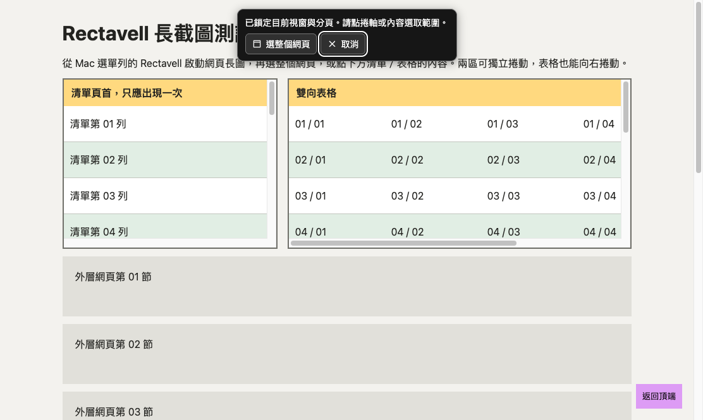

原生長截圖
- 在 macOS 的「隱私權與安全性」允許 Rectavell 使用螢幕錄製與輔助使用。在 Chrome 打開要截的分頁。
- 右鍵點 Mac 選單列的 Rectavell，選「捲動截圖」，再輕點 Chrome 視窗。也可以在智慧框選時指向視窗，再點選框旁的「捲動截圖」。
- 整頁從可視內容的左上拖到右下，排除分頁和網址列。只截一個容器時，框在容器邊界內。放手後開始捲動。
- 完成後回到 Mac 後製，可標註、複製或下載 PNG。需要取消時，點選單列的停止圖示。
免外掛原型支援單螢幕內的 Chrome 視窗及垂直捲動。水平捲動、持續變動的內容與其他浮動配置仍有限制。
Chrome 擴充功能模式
- 先開啟 Mac App。在需要使用長截圖的 Chrome Profile，開啟
chrome://extensions/，啟用開發人員模式，選「載入未封裝項目」並指定專案的 chrome-extension 資料夾。
- 在 Chrome 開啟目標分頁。右鍵點 Mac 選單列的 Rectavell，在「…」選「Chrome 擴充功能長圖」。

Chrome 鎖定視窗與分頁，接著可選整個網頁或點捲動區。
點捲軸或內容，確認選框
點左側清單的捲軸，也可以直接點清單內的文字。兩種方式都會框住同一個容器。若需要整頁，可選「選外層捲動區」。
比較可見區與完整內容
選擇擷取方式後，成品會直接回到 Mac 原生後製。可標註、複製或下載 PNG。完整長圖的頁首只應出現一次，底部應包含第 18 列。右側表格可練習垂直與水平擷取。
取消與後續功能
擷取時保持在原分頁。按 Esc 可取消。成功或取消後，可檢查原捲動位置是否保留。
擷取後可在 Mac 加入標註或遮蔽。批次畫布與錄影規劃見 功能與操作說明。